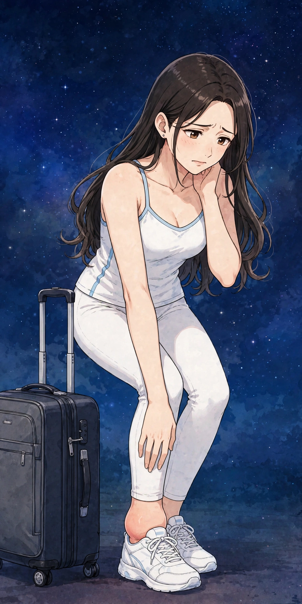

三ノ宮で移動後の脚のむくみケア巡り・冷え

新幹線で数時間、飛行機で半日、車の助手席で渋滞の中。長旅のあとに降り立った駅で、脚が鉛のように重く、靴がきつい——長時間移動のあとの脚のむくみは、旅の楽しさの影で多くの方が感じています。
神戸・三ノ宮の女性専用サロン「ステラスピカ」では、移動後の脚のむくみを「座り続けた脚に残った巡りの滞り」と捉え、ふくらはぎを中心に流すオイルマッサージと美容整体でケアします。旅の締めくくりや、出張帰りのリセットにどうぞ。
長時間移動のあとの脚のむくみはどんな状態か
座った姿勢が続くと、ふくらはぎの筋肉がほとんど動かず、下半身の巡りを押し上げるポンプの働きが止まります。重力で下がった水分や血液が脚に残り続け、膝裏や足首まわりにたまって、重だるさや腫れぼったさとして感じられます。
飛行機では気圧の変化や乾燥、車では振動と姿勢の固定が加わり、むくみが強く出やすくなります。普段は夕方だけのむくみでも、長距離移動のあとは朝まで残ることがあります。
こんなサインはありませんか？移動後の脚のむくみチェック
- 移動のあと、靴やサンダルがきつく感じる
- 膝裏やふくらはぎがパンパンに張った感じがする
- 足首の骨の出っ張りがむくみで分かりにくい
- 座席を立った直後、脚が重くて歩き出しがぎこちない
- 移動の翌朝まで脚の重だるさが残っている
- 長時間の移動中、ほとんど席を立たないことが多い
- 飛行機や車では足を組んだまま過ごすことが多い
- 帰宅後すぐ横になり、脚のケアをしないまま寝てしまう
長時間移動のあとの脚のむくみにつながりやすい要因

- 座り姿勢の継続 ― ふくらはぎのポンプが止まることが最大の要因です。2時間以上同じ姿勢が続くと、脚に水分が残りやすくなります。
- 膝裏の圧迫 ― 座席の縁が膝裏を圧迫し続けると、脚の巡りの戻りが妨げられます。座面の高い椅子や硬い座席で起こりやすい要因です。
- 足を組む・同じ向きで固まる姿勢 ― 足を組んだ姿勢や、体をひねったままの姿勢は、片側の巡りを妨げて左右差のあるむくみを残しやすくなります。
- 水分の取り方の偏り ― トイレを気にして水分を控えすぎると、体が水分をため込もうとしてむくみやすくなります。塩分の多い駅弁や機内食も影響します。
- 飛行機の気圧と乾燥 ― 機内の低い気圧では体が膨張しやすく、乾燥で水分バランスも崩れやすくなります。長距離フライトほどむくみが強く出ます。
- 到着後の活動量の差 ― 到着後に歩く量が少ないと、たまった水分が戻るきっかけを失います。ホテルでそのまま横になる日は翌朝まで残りやすくなります。
図1｜移動後にむくみが残りやすいふくらはぎ・膝裏・足首（背面）

東洋医学から見た考え方
東洋医学では、むくみは「水」の巡りの滞りと関係づけて考えます。動かさない時間が長引くほど水のめぐりはゆるやかになり、体の中でも低い位置にある脚に余分な水が残るとされます。移動後のむくみは、まさに「動かないこと」が生んだ滞りと言えます。
脚の後ろを流れる膀胱経と、足裏から脚の内側を通る腎経は、水の巡りと関わりが深いとされる経絡です。当店では、足裏からふくらはぎ、膝裏へと下から上へ流す組み立てを基本に、移動で固まった脚全体をほぐします。
代表的なツボ
移動後の脚のケアに知っておきたい代表的なツボを3つご紹介します。座席でも触れられる場所を含んでいます。
ふくらはぎの、かかとを上げたときにできる膨らみの下のくぼみにあります。脚の疲れや重さと関わりが深いとされるツボで、両手の親指を重ねてゆっくり押すと、固まったふくらはぎに響きます。移動後のストレッチと合わせてどうぞ。
脚の内側、内くるぶしから指4本分ほど上がった、すねの骨の後ろの際にあるツボです。水の巡りと関わりが深いとされる場所で、座席でも靴の上から位置を確認しやすくなります。親指でゆっくり圧をかけると、じんわり響く感覚があります。妊娠中は強く押さないでください。
足裏の、指を曲げたときにできるくぼみの中央あたりにあります。腎経の始まりのツボとされ、足裏を押すケアの中心になる場所です。手の親指で押すほか、床に置いたゴルフボールなどを踏んで刺激する方法もあります。移動後の足裏ほぐしの起点にどうぞ。
図2｜移動後の脚のむくみに関わるツボの位置（背面）
おすすめの施術
おすすめ：オイルマッサージ＋美容整体
移動後の脚には、巡りを押し上げるオイルマッサージが中心になります。足裏の湧泉から始めて、ふくらはぎの承山、膝裏、太ももの付け根へと下から上へ流すようにほぐします。移動で圧迫されていた膝裏や、固まったお尻まわりも合わせてゆるめると、脚全体の軽さが変わります。
仕上げの美容整体では、骨盤まわりや姿勢のバランスを確認します。移動の頻度が高い方には、座席でできる足首回しの習慣など、次の移動で役立つ工夫もご案内します。
当店の施術は、気になる部分だけをなでるのではなく、つながりのある部位まで含めて深い圧でほぐし、巡りを促しながら整えていくのが持ち味です。施術のあとに「体が軽い」「すっきりした」と感じていただける状態を目指して、90分を組み立てます。
自宅でできるセルフケア
移動後のむくみは、移動中と到着直後の過ごし方で大きく変わります。次回の長旅から取り入れられるものばかりです。
- 1. 移動中の足首回し・つま先上げ下げ座ったまま、足首を大きく回す、つま先を上げ下げする動きを1時間に一度取り入れます。靴の中でできる小さな動きでも、ふくらはぎのポンプは働きます。
- 2. 移動後の散歩到着後は10〜15分歩く時間を作ると、たまった水分が戻りやすくなります。駅の乗り換えやホテル周辺の一周など、旅程の中に組み込むのがコツです。
- 3. 水分の取り方トイレが心配でも水分を極端に控えず、こまめに適量を取ります。塩分の多い食事が続いた移動では、温かい飲み物でバランスを取る意識を。
- 4. 到着後の湯船と脚上げ宿や自宅では湯船で脚を温め、お風呂上がりにクッションの上に脚を10分ほど上げて休みます。その日のうちに戻しておくと、翌朝の重さが変わります。
図3｜座ったままの足首回し（正面）

場面別の注意
新幹線・特急の長距離
通路側の席では1時間に一度立つ機会を作り、デッキで足首回しやかかと上げをするだけでも違います。膝裏が座席の縁に当たる場合は、足元に荷物を置いて膝の角度を変える工夫も有効です。
飛行機の旅行
長距離フライトでは、機内を歩くタイミングを決めておくことが大切です。水分はこまめに取り、アルコールは控えめに。到着日は無理な予定を詰めず、歩く時間と脚を休める時間を両方確保すると、旅の後半まで脚が持ちやすくなります。
車の長距離運転
運転手は足首を動かせる時間が限られるため、休憩ごとに車外で歩くことを徹底してください。同乗者は座席で足首回しができますが、足をダッシュボードに上げる姿勢は危険なので避けましょう。サービスエリアでの数分の歩行が、到着後の重さを変えます。
受診の目安
次のような場合は、まず医療機関への受診をご検討ください。
- 片脚だけが急にむくみ、痛みや熱感、赤みを伴っている
- むくみに加えて息苦しさや胸の痛みがある
- 移動後数日たってもむくみが引かず、強くなっている
- 脚の皮膚のただれや、傷のふさがりにくさが続いている
- むくみとともに尿の量が極端に減っている
当店は医療機関ではなく、診断は行いません。気になる症状がある場合は、施術の前に医療機関でご相談ください。
よくある質問
出張の多い仕事です。どのくらいの頻度でケアすればいいですか？
長距離移動の回数が多い方は、月1回を目安に脚の巡りを確認しながら進める方が多いです。移動中の足首回しの習慣と合わせると、重さの残り方が変わります。
移動当日に施術を受けてもいいですか？
到着後の脚の重さをその日のうちに戻す意味では、当日のご利用も向いています。到着が遅くなる場合は営業時間（17:00〜22:00）と合わせてご検討ください。
着圧ソックスは使った方がいいですか？
移動中の着圧ソックスは、脚の巡りを助ける工夫のひとつとして使われています。締めつけが強すぎると巡りを妨げることもあるため、サイズの合ったものを選び、到着後は外して脚を休ませましょう。
むくみが翌日まで残るのは普通ですか？
長距離移動のあとは翌朝まで重さが残ることもありますが、歩行や入浴で徐々に引いていくことが多いです。数日たっても引かない、左右差が大きい場合は医療機関での相談をおすすめします。
関連するお悩みページ
関連する経絡ページ
ご予約
ステラスピカ（神戸・三ノ宮／女性専用）｜オイルマッサージ・美容整体 90分 10,000円｜月〜土 17:00〜22:00・完全予約制
現在はご予約はLINE公式アカウントから受け付けています。開院のご案内までしばらくお待ちください。ご予約の際に「長時間移動のあとの脚のむくみが気になる」とお伝えいただければ、その日の状態に合わせて施術を組み立てます。